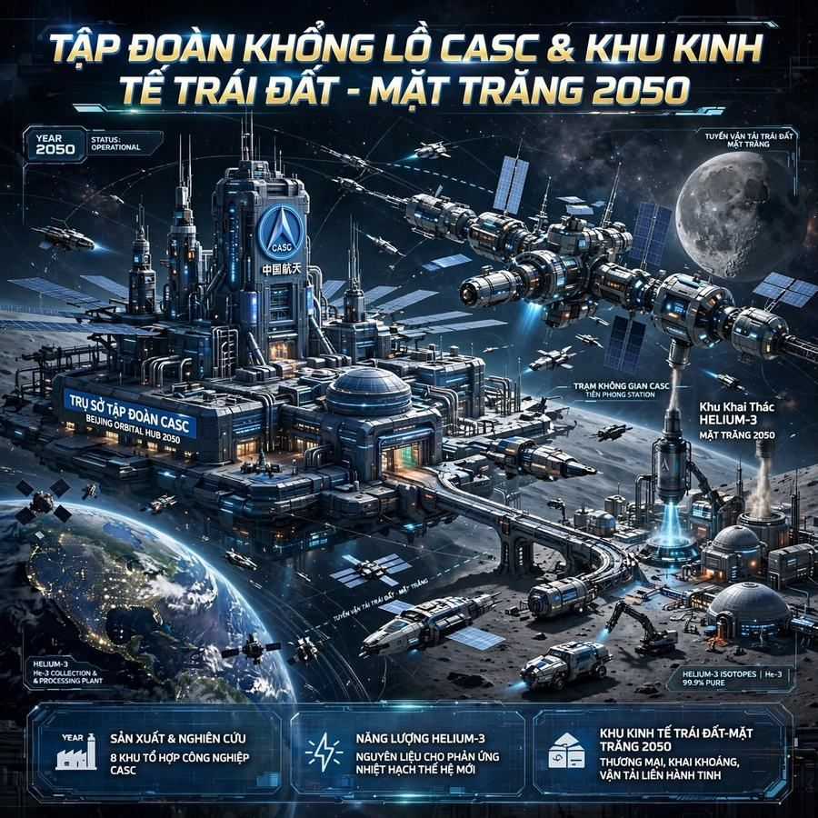
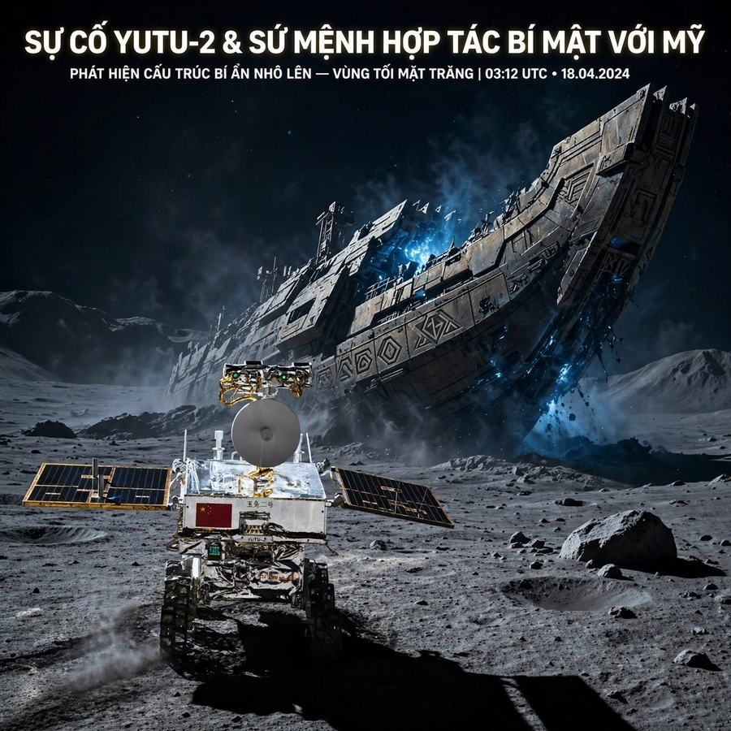
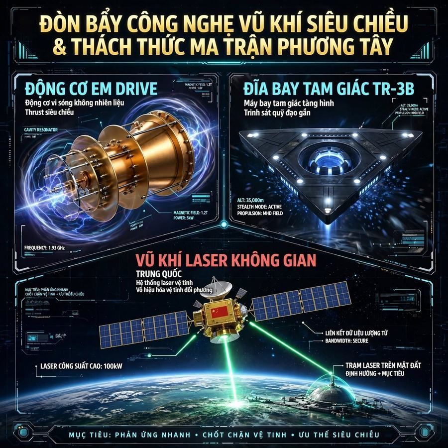
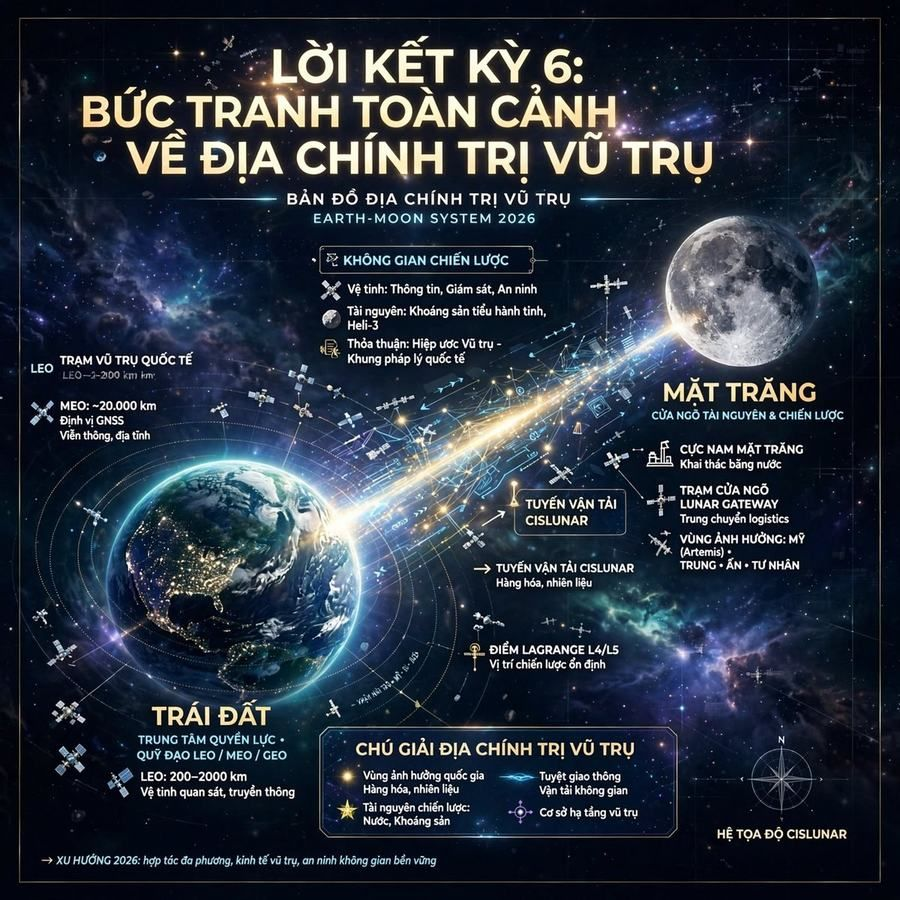

Trang chủ / Chuyên đề 5: Chương Trình Không Gian Bí Mật / Kỳ 46
Chuyên đề 5 · Kỳ 46 / 90
CHƯƠNG TRÌNH KHÔNG GIAN BÍ MẬT CỦA TRUNG QUỐC (RISE OF THE RED DRAGON) & CUỘC ĐUA CÔNG NGHỆ VŨ TRỤ

Ở Kỳ 5, chúng ta đã cùng nhau thâm nhập vào thế giới lượng tử siêu việt của công nghệ du hành thời gian, giải mã Dự án Looking Glass và sự thật về mốc thời gian thăng hoa 5D không thể đảo ngược của nhân loại Trái Đất. Nếu như ở các kỳ trước, bức tranh về các Chương trình Không gian Bí mật (SSP) phần lớn xoay quanh sự chi phối của Mỹ, Đức Quốc Xã và các tập đoàn phương Tây (ICC), thì hôm nay chúng ta sẽ khám phá một mảnh ghép địa chính trị vũ trụ vô cùng quan trọng: Chương Trình Không Gian Bí Mật Của Trung Quốc (China's Secret Space Program / Rise of the Red Dragon). Chương trình không gian bí mật của Trung Quốc đã hình thành như thế nào từ tầm nhìn của "cha đẻ" ngành tên lửa Tiền Học Sâm (Tsien Hsue-shen)? Hai tập đoàn khổng lồ CASC và CASIC nắm giữ vai trò gì trong việc xây dựng cơ sở hạ tầng không gian song song? Kế hoạch thiết lập "Khu Kinh Tế Trái Đất - Mặt Trăng 2050" vận hành ra sao? Sự thật đằng sau việc tàu thám hiểm Ngọc Thỏ 2 (Yutu-2) phát hiện con tàu vũ trụ cổ đại khổng lồ ở vùng tối Mặt Trăng dẫn đến sứ mệnh hợp tác bí mật giữa Mỹ và Trung Quốc ra sao? 1. TIẾN SĨ TIỀN HỌC SÂM (TSIEN HSUE-SHEN) & NỀN MÓNG VIỆN HÀN LÂM THỨ 5 Khởi nguồn của chương trình không gian bí mật Trung Quốc gắn liền với cuộc đời của Tiến sĩ Tiền Học Sâm (Tsien Hsue-shen) — một thiên tài hàng không vũ trụ hàng đầu thế giới. A. Từ Nhà Sáng Lập JPL/Caltech Đến Hành Trình Trở Về Quốc Gia
- Nhà Khoa Học Xuất Chúng Tại Mỹ: Tiến sĩ Tiền Học Sâm từng là học trò xuất sắc của Theodore von Kármán, là một trong những nhà sáng lập Phòng Thí nghiệm Sức đẩy Thần tốc (JPL) thuộc Caltech và tham gia nghiên cứu các công nghệ hàng không vũ trụ cao cấp cho quân đội Mỹ trong Thế chiến II.
- Bị Trục Xuất & Sự Ra Đời Của Viện Hàn Lâm Thứ 5: Sau khi bị vướng vào cuộc điều tra an ninh thập niên 1950 thời McCarthyism, ông trở về Trung Quốc và thành lập Viện Hàn lâm Thứ 5 vào năm 1956 — cơ sở nòng cốt khởi đầu cho toàn bộ chương trình tên lửa, khí cầu và công nghệ không gian bí mật của Trung Quốc. B. Nghiên Cứu UFO & Thu Thuật Di Sản Cổ Đại
- Ủng Hộ Nghiên Cứu Hiện Tượng Không Gian: Thập niên 1980, Tiến sĩ Tiền nhiệt liệt hỗ trợ việc thành lập Tổ chức Nghiên cứu UFO Trung Quốc (CURO), cho phép các kỹ sư phân tích cơ chế vận hành của các đĩa bay ngoài hành tinh.
- Khai Thác Cổ Vật Tây Tạng & Shambhala: Bên cạnh nghiên cứu kỹ thuật hiện đại, các lực lượng ngầm đã âm thầm thu thập các cổ vật và công nghệ năng lượng cổ đại từ các hệ thống hang động Tây Tạng và các tàn tích ngầm Agartha để ứng dụng vào công nghệ động cơ đĩa bay.
2. TẬP ĐOÀN KHỔNG LỒ CASC & KHU KINH TẾ TRÁI ĐẤT - MẶT TRĂNG 2050
Khác với chương trình dân sự công khai (CNSA), chương trình không gian bí mật của Trung Quốc được vận hành và tài trợ bởi các tập đoàn công nghiệp quốc phòng nhà nước khổng lồ. A. Sự Phân Chia Giữa CASC Và CASIC
- Tập Đoàn Khoa Học & Công Nghệ Hàng Không Vũ Trụ (CASC): CASC đóng vai trò là đơn vị doanh nghiệp nòng cốt thực hiện các kế hoạch R&D bí mật của Tiền Học Sâm, chế tạo các phương tiện du hành kháng hấp dẫn, đĩa bay và trạm không gian thế hệ mới.
- Tài Chính Đen & Ngân Sách Bí Mật: Nhờ sự bùng nổ kinh tế trong nhiều thập kỷ, Trung Quốc đã chuyển hàng trăm tỷ đô la vào các quỹ dự án đen (Black Budget) để thu hẹp khoảng cách công nghệ và xây dựng lực lượng không gian song song hoàn toàn tách biệt khỏi sự quan sát của thế giới. B. Kế Hoạch Bá Chủ "Khu Kinh Tế Trái Đất - Mặt Trăng 2050"
- Khai Thác Tài Nguyên Vũ Trụ: Trung Quốc công khai và âm thầm đặt mục tiêu hoàn thành "Khu kinh tế Trái Đất - Mặt Trăng" vào năm 2050 với giá trị hàng chục ngàn tỷ đô la, tập trung vào việc khai thác Helium-3, kim loại hiếm trên Mặt Trăng và thiết lập các căn cứ ngầm lâu dài.

3. SỰ CỐ YUTU-2 (NGỌC THỎ 2) & SỨ MỆNH HỢP TÁC BÍ MẬT VỚI MỸ
Một trong những sự kiện giải mật gây chấn động nhất những năm gần đây liên quan đến hoạt động thám hiểm vùng tối Mặt Trăng của Trung Quốc. A. Tàu Thám Hiểm Yutu-2 Phát Hiện Tàu Vũ Trụ Cổ Đại
- Vật Thể Kỳ Lạ Ở Vùng Tối Mặt Trăng: Tháng 12/2021, tàu thám hiểm Ngọc Thỏ 2 (Yutu-2) thuộc sứ mệnh Hằng Nga 4 (Chang'e 4) khi di chuyển ở mặt xa Mặt Trăng đã phát hiện ra phần mũi của một đại chiến hạm cổ đại ngoài hành tinh nhô lên từ lòng đất (kích thước lớn bằng 2 tàu sân bay). B. Sứ Mệnh Khám Phá Hỗn Hợp Mỹ - Trung (Joint Mission)
- Bắt Tay Xuyên Quốc Gia Trong Bóng Tối: Bất chấp những căng thẳng địa chính trị công khai trên bề mặt, phát hiện này đã lập tức kích hoạt một sứ mệnh thám hiểm chung bí mật giữa Bộ Tư lệnh Không gian Hoa Kỳ (US Space Command) và Lực lượng Không gian PLA (Trung Quốc).
- Tiến Vào Bên Trong Con Tàu Cổ Đội: Các đội thám hiểm hỗn hợp đã tiến vào bên trong con tàu, thu thập các bảng ký tự cổ, ma trận tinh thể lưu trữ tri thức và nghiên cứu cơ chế công nghệ của con tàu Hòm Không Gian (Space Ark) đang dần thức tỉnh này.

4. ĐÒN BẨY CÔNG NGHỆ VŨ KHÍ SIÊU CHIỀU & THÁCH THỨC MA TRẬN PHƯƠNG TÂY
Chương trình SSP của Trung Quốc không chỉ dừng lại ở thám hiểm mà còn hướng tới việc tạo đòn bẩy quân sự không gian. A. Động Cơ Kháng Hấp Dẫn & EM Drive
- Làm Chủ Công Nghệ Động Cơ Không Nhiên Liệu: Trung Quốc đã thử nghiệm và hoàn thiện các dòng động cơ điện từ (EM Drive), phương tiện bay hình tam giác và đĩa bay thế hệ mới có tốc độ vượt xa phản lực truyền thống.
- Vũ Khí Laser & Xung Cao Tần: Phát triển các hệ thống siêu laser từ không gian, vũ khí xung điện từ (EMP) và pháo cao tần có khả năng làm tê liệt các vệ tinh và căn cứ của đối thủ trong chớp mắt. B. Cạnh Tranh Quyền Lực Trên Bàn Cờ Liên Sao
- Thách Thức Sự Thống Trị Của ICC: Sự trỗi dậy của chương trình SSP Trung Quốc đã buộc Liên minh Tập đoàn Phương Tây (ICC) và các lực lượng không gian Mỹ phải thay đổi chiến lược, dẫn đến sự ra đời của Lực lượng Không gian Mỹ (US Space Force) để duy trì thế cân bằng.

5. LỜI KẾT KỲ 6: BỨC TRANH TOÀN CẢNH VỀ ĐỊA CHÍNH TRỊ VŨ TRỤ
Kỳ 6 của chuyên đề 5 khép lại mang đến cái nhìn đa chiều về cuộc đua không gian:
- Vũ Trụ Không Phải Là Sân Chơi Của Riêng Ai: Cuộc đua không gian bí mật là một trận chiến địa chính trị toàn cầu phức tạp. Việc hiểu rõ sự trỗi dậy của các phe phái giúp chúng ta rũ bỏ tư duy phiến diện về quyền lực thế giới.
- Hướng Tới Sự Hợp Nhất Tâm Thức Hoàn Toàn: Mọi cuộc cạnh tranh bá chủ trên bề mặt hay ngoài không gian đều sẽ trở nên vô nghĩa khi dải tần số 5D thẩm thấu. Nhân loại chỉ có thể thực sự bước ra Đa Vũ trụ khi tất cả các dân tộc cùng bắt tay nhau trong Tình Yêu Thương và Hòa Bình!
